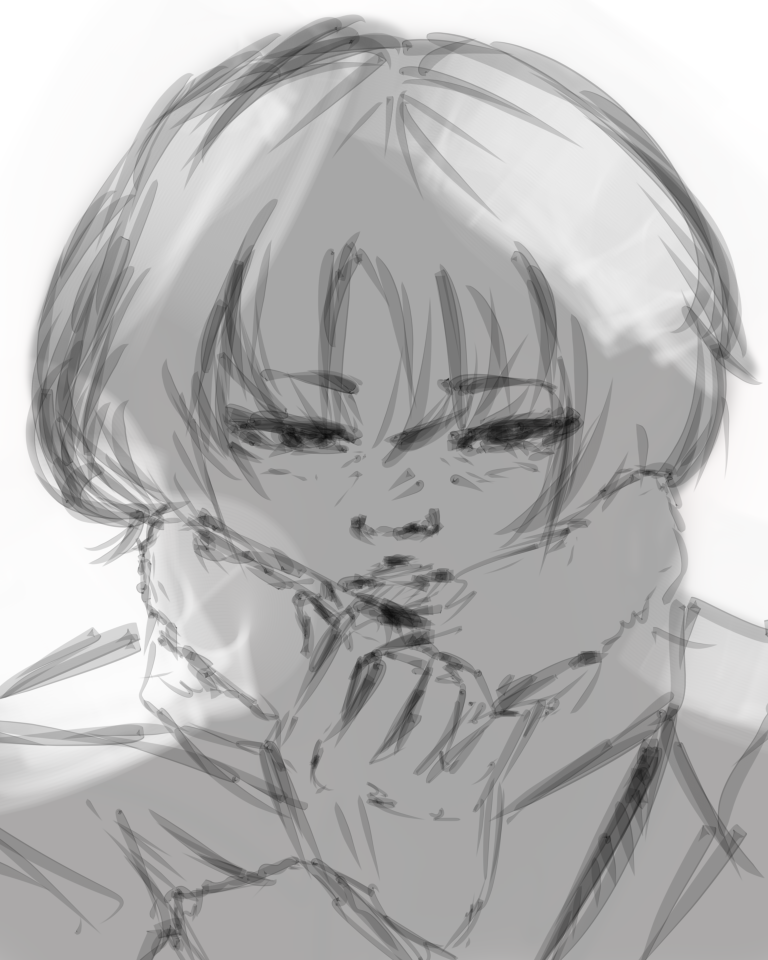

Tentang Saya
Nama saya Mahreczy Aditya Putra, saya lahir di Palu, pada tanggal 31 Maret 2005. Saya sedang menempuh pendidikan di Universitas Tadulako dan memperdalami ilmu tentang Teknologi Informasi, tepatnya di program studi Teknik Informatika. Selain ingin mempelajari tentang dunia teknologi, saya juga sering melakukan hal-hal yang berkaitan dengan Seni, seperti Melukis dan Menggambar. Saya ingin menjadikan ketertarikan ku tentang teknologi ataupun seni ini menjadi salah satu sumber untuk mencari uang di masa depan agar saya bisa sukses dan membalas budi orang tua saya.
Portofolio
Salah Satu Hasil Karyaku
Ini merupakan salah satu karya yang telah saya buat. Saya telah membuat karya-karya seperti ini di waktu luang kemudian saya unggah di akun media sosial saya sendiri.